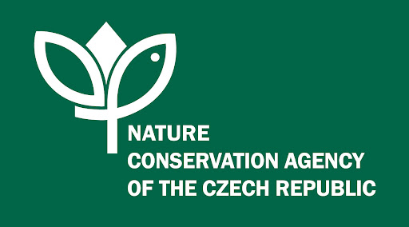

The third interdisciplinary symposium “Biogeography of the Carpathians” will be held in September 2022 in Prague, Czechia. The forum offers an excellent opportunity for scientists studying the biodiversity and evolution of the Carpathian biota to share their most recent knowledge and to interact with others having similar interests. The third edition is a continuation of symposia organized in Kraków, Poland (2013) and Cluj, Romania (2017), and represents a platform for free exchange of ideas, research advances and future research directions shared by scientists connected by their common interests on diverse aspects of the Carpathian biodiversity.
These aspects, which will be discussed within the present symposium, include:
- Evolution, spatial distribution and past climate-induced distributional shifts of the Carpathian biota from infraspecific to ecosystem level
- Carpathians in a larger biogeographical context
- Impact of climate change on ecology & future range shifts of the Carpathian biota
- Biological invasions: spatial patterns & impact on native biodiversity
- Identification, conservation & sustainability of biodiversity hot spots
Registration
Registration & fee details will be announced in March 2022.
Small amount of travel grants for presenting graduate students are planed.
Programme
Invited speakers
So far confirmed
Karel Chobot
Nature Conservation Agency of the Czech Republic, Prague, Czechia
Michal Grabowski
University of Łódź, Łódź, Poland
Ľuboš Halada
Institute of Landscape Ecology, Bratislava, Slovakia
Michal Horsák
Masaryk Univesity, Brno, Czechia
Veronika Konečná
Charles University, Prague, Czechia
Venue
Symposium venue
Velká geologická posluchárna Lecture Hall Faculty of Science, Charles University Albertov 6 Prague, Czech Republic 50°4'8.174"N, 14°25'28.102"E
Transport
Arrival by plane to Václav Havel international airport
From the bus stop at Václav Havel Airport (Terminal 1 / Terminal 2) take a bus no. 119
direction to the terminal stop Nádraží Veleslavín where you change to a metro line A
to Hradčanská station where you get off and change to a tram no. 18 to Albertov where you get
off and walk ca 250 m
to Albertov 6 (duration ca 55 min).
Arrival by train to Prague main railway station
Take a tram no. 9 to Národní třída where you change to a tram no. 18 to Albertov
where you get off and walk ca 250 m to Albertov 6 (duration ca 20 min).
Arrival by bus to main station Prague - Florenc
Take a metro line B to Karlovo náměstí station where you change to a tram no. 14 or 18 or 24 to
Albertov where you get off and walk ca 250 m to Albertov 6 (duration ca 20 min).
Food
TBA
Accomodation
The venue is located at Albertov - the university quarter situated very close to the historical city centre. We recommend to stay locally and rent an apartment (available via AirBnB or Booking.com) or book your accommodation in several pensions / hotels situated nearby. Please make a reservation in advance as Prague belongs to the most visited cities in Europe.
Symposium organization
Organized by
Faculty of Science, Charles University, Prague
under the auspices of
Prof. Jiří Zima, Dean of the Faculty
Coorganized & Financially supported by
Nature Conservation Agency of the Czech Republic
Scientific & Organizing Committee
Department of Botany, Faculty of Science, Charles University, Prague
Institute of Biological Research, Cluj-Napoca
Nature Conservation Agency of the Czech Republic, Prague
Department of Zoology, Faculty of Science, Charles University, Prague
Department of Botany, Faculty of Science, Charles University, Prague
Department of Ecology, Faculty of Science, Charles University, Prague
Botanical Garden, Babeş-Bolyai University, Cluj-Napoca
Institute of Botany, Polish Academy of Sciences, Kraków
Department of Zoology, Faculty of Science, Charles University, Prague
Contact
symposium-carpathians-2022(at)natur.cuni.cz
Patrik Mráz: +420 221 951 642
Viera Mrázová: +420 221 951 646